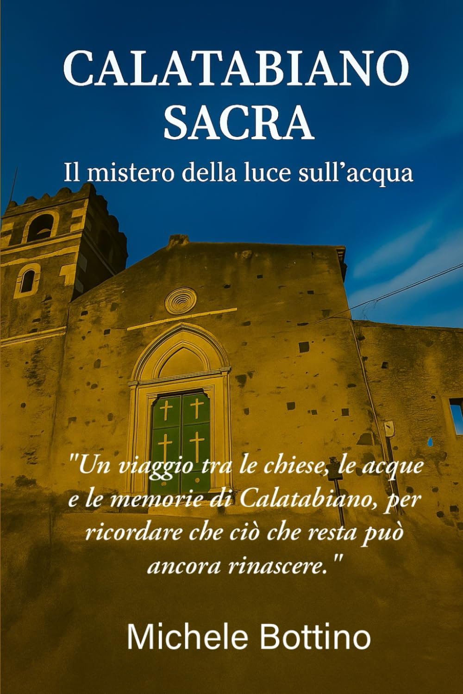

Saggistica storico-documentaria
Calatabiano Sacra: Il mistero della luce sull’acqua

Presentazione dell’opera
Opera dedicata al territorio di Calatabiano e alla sua memoria storica, fra documentazione e lettura simbolica del patrimonio locale.
Sinossi riformulata dalla panoramica editoriale Amazon fornita dall’autore; i riferimenti documentari qui citati descrivono il contenuto del libro e non sostituiscono una verifica indipendente delle fonti storiche.
Edizioni e identificativi
Formato segnalato nello Store Amazon: Copertina flessibile
ISBN-13: 9798272417756 · ASIN Amazon: B0FYXD5VNC
Pubblicazione: 1 novembre 2025 · Editore: Independently published
Lingua: italiano · Stampa: 133 pagine
Dimensioni: 15,24 × 0,86 × 22,86 cm · Peso dichiarato: 191 g
Formati indicati sulla base dell’elenco dello Store Amazon comunicato il 27 ottobre 2026. La disponibilità può variare.